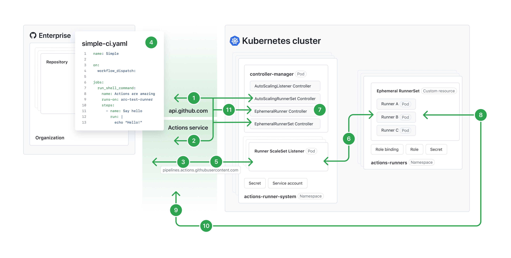

You can host your own runners and customize the environment used to run jobs in your GitHub Actions workflows.
Actions Runner Controller (ARC) is a Kubernetes operator that orchestrates and scales self-hosted runners for GitHub Actions. For more information, see Operator pattern in the Kubernetes documentation.
With ARC, you can create runner scale sets that automatically scale based on the number of workflows running in your repository, organization, or enterprise. Because controlled runners can be ephemeral and based on containers, new runner instances can scale up or down rapidly and cleanly. For more information about autoscaling, see Self-hosted runners reference.
The following diagram illustrates the architecture of ARC's autoscaling runner scale set mode.
Note
To view the following diagram in a larger size, see the Autoscaling Runner Scale Sets mode documentation in the Actions Runner Controller repository.

Job Available message from the GitHub Actions Service.runs-on key matches the name of a runner scale set or the labels of a runner scale set or self-hosted runner.Job Available message, it checks whether it can scale up to the desired count. If it can, the Runner ScaleSet Listener acknowledges the message.failed, the controller retries up to 5 times. After 24 hours the GitHub Actions Service unassigns the job if no runner accepts it.ARC consists of a set of resources, some of which are created specifically for ARC. An ARC deployment applies these resources onto a Kubernetes cluster. Once applied, it creates a set of Pods that contain your self-hosted runners' containers. With ARC, GitHub can treat these runner containers as self-hosted runners and allocate jobs to them as needed.
Each resource that is deployed by ARC is given a name composed of:
Note
Different versions of Kubernetes have different length limits for names of resources. The length limit for the resource name is calculated by adding the length of the installation name and the length of the resource identification suffix. If the resource name is longer than the reserved length, you will receive an error.
gha-runner-scale-set-controller
| Template | Resource Kind | Name | Reserved Length | Description | Notes |
|---|---|---|---|---|---|
deployment.yaml |
Deployment | INSTALLATION_NAME-gha-rs-controller | 18 | The resource running controller-manager | The pods created by this resource have the ReplicaSet suffix and the Pod suffix. |
serviceaccount.yaml |
ServiceAccount | INSTALLATION_NAME-gha-rs-controller | 18 | This is created if serviceAccount.create in values.yaml is set to true. |
The name can be customized in values.yaml
|
manager_cluster_role.yaml |
ClusterRole | INSTALLATION_NAME-gha-rs-controller | 18 | ClusterRole for the controller manager | This is created if the value of flags.watchSingleNamespace is empty. |
manager_cluster_role_binding.yaml |
ClusterRoleBinding | INSTALLATION_NAME-gha-rs-controller | 18 | ClusterRoleBinding for the controller manager | This is created if the value of flags.watchSingleNamespace is empty. |
manager_single_namespace_controller_role.yaml |
Role | INSTALLATION_NAME-gha-rs-controller-single-namespace | 35 | Role for the controller manager | This is created if the value of flags.watchSingleNamespace is set. |
manager_single_namespace_controller_role_binding.yaml |
RoleBinding | INSTALLATION_NAME-gha-rs-controller-single-namespace | 35 | RoleBinding for the controller manager | This is created if the value of flags.watchSingleNamespace is set. |
manager_single_namespace_watch_role.yaml |
Role | INSTALLATION_NAME-gha-rs-controller-single-namespace-watch | 41 | Role for the controller manager for the namespace configured | This is created if the value of flags.watchSingleNamespace is set. |
manager_single_namespace_watch_role_binding.yaml |
RoleBinding | INSTALLATION_NAME-gha-rs-controller-single-namespace-watch | 41 | RoleBinding for the controller manager for the namespace configured | This is created if the value of flags.watchSingleNamespace is set. |
manager_listener_role.yaml |
Role | INSTALLATION_NAME-gha-rs-controller-listener | 26 | Role for the listener | This is always created. |
manager_listener_role_binding.yaml |
RoleBinding | INSTALLATION_NAME-gha-rs-controller-listener | 26 | RoleBinding for the listener | This is always created and binds the listener role with the service account, which is either created by serviceaccount.yaml or configured with values.yaml. |
gha-runner-scale-set
| Template | Resource Kind | Name | Reserved Length | Description | Notes |
|---|---|---|---|---|---|
autoscalingrunnerset.yaml |
AutoscalingRunnerSet | INSTALLATION_NAME | 0 | Top level resource working with scale sets | The name is limited to 45 characters in length. |
no_permission_service_account.yaml |
ServiceAccount | INSTALLATION_NAME-gha-rs-no-permission | 21 | Service account mounted to the runner container | This is created if the container mode is not "kubernetes" and template.spec.serviceAccountName is not specified. |
githubsecret.yaml |
Secret | INSTALLATION_NAME-gha-rs-github-secret | 20 | Secret containing values needed to authenticate to the GitHub API | This is created if githubConfigSecret is an object. If a string is provided, this secret will not be created. |
manager_role.yaml |
Role | INSTALLATION_NAME-gha-rs-manager | 15 | Role provided to the manager to be able to reconcile on resources in the autoscaling runner set's namespace | This is always created. |
manager_role_binding.yaml |
RoleBinding | INSTALLATION_NAME-gha-rs-manager | 15 | Binding manager_role to the manager service account. | This is always created. |
kube_mode_role.yaml |
Role | INSTALLATION_NAME-gha-rs-kube-mode | 17 | Role providing necessary permissions for the hook | This is created when the container mode is set to "kubernetes" and template.spec.serviceAccount is not provided. |
kube_mode_serviceaccount.yaml |
ServiceAccount | INSTALLATION_NAME-gha-rs-kube-mode | 17 | Service account bound to the runner pod. | This is created when the container mode is set to "kubernetes" and template.spec.serviceAccount is not provided. |
ARC consists of several custom resource definitions (CRDs). For more information on custom resources, see Custom Resources in the Kubernetes documentation. You can find the list of custom resource definitions used for ARC in the following API schema definitions.
Because custom resources are extensions of the Kubernetes API, they won't be available in a default Kubernetes installation. You will need to install these custom resources to use ARC. For more information on installing custom resources, see Get started with Actions Runner Controller.
Once the custom resources are installed, you can deploy ARC into your Kubernetes cluster. For information about deploying ARC, see Deploying runner scale sets with Actions Runner Controller.
GitHub maintains a minimal runner container image. A new image will be published with every runner binaries release. The most recent image will have the runner binaries version and latest as tags.
This image contains the least amount of packages necessary for the container runtime and the runner binaries. To install additional software, you can create your own runner image. You can use ARC's runner image as a base, or use the corresponding setup actions. For instance, actions/setup-java for Java or actions/setup-node for Node.
You can find the definition of ARC's runner image in this Dockerfile. To view the current base image, check the FROM line in the runner image Dockerfile, then search for that tag in the dotnet/dotnet-docker repository.
For example, if the FROM line in the runner image Dockerfile is mcr.microsoft.com/dotnet/runtime-deps:8.0-jammy AS build, then you can find the base image in https://github.com/dotnet/dotnet-docker/blob/main/src/runtime-deps/8.0/jammy/amd64/Dockerfile.
You can create your own runner image that meets your requirements. Your runner image must fulfill the following conditions.
Use a base image that can run the self-hosted runner application. See Managing self-hosted runners.
The runner binary must be placed under /home/runner/ and launched using /home/runner/run.sh.
If you use Kubernetes mode, the runner container hooks must be placed under /home/runner/k8s.
You can use the following example Dockerfile to start creating your own runner image.
FROM mcr.microsoft.com/dotnet/runtime-deps:6.0 as build
# Replace value with the latest runner release version
# source: https://github.com/actions/runner/releases
# ex: 2.303.0
ARG RUNNER_VERSION=""
ARG RUNNER_ARCH="x64"
# Replace value with the latest runner-container-hooks release version
# source: https://github.com/actions/runner-container-hooks/releases
# ex: 0.3.1
ARG RUNNER_CONTAINER_HOOKS_VERSION=""
ENV DEBIAN_FRONTEND=noninteractive
ENV RUNNER_MANUALLY_TRAP_SIG=1
ENV ACTIONS_RUNNER_PRINT_LOG_TO_STDOUT=1
RUN apt update -y && apt install curl unzip -y
RUN adduser --disabled-password --gecos "" --uid 1001 runner \
&& groupadd docker --gid 123 \
&& usermod -aG sudo runner \
&& usermod -aG docker runner \
&& echo "%sudo ALL=(ALL:ALL) NOPASSWD:ALL" > /etc/sudoers \
&& echo "Defaults env_keep += \"DEBIAN_FRONTEND\"" >> /etc/sudoers
WORKDIR /home/runner
RUN curl -f -L -o runner.tar.gz https://github.com/actions/runner/releases/download/v${RUNNER_VERSION}/actions-runner-linux-${RUNNER_ARCH}-${RUNNER_VERSION}.tar.gz \
&& tar xzf ./runner.tar.gz \
&& rm runner.tar.gz
RUN curl -f -L -o runner-container-hooks.zip https://github.com/actions/runner-container-hooks/releases/download/v${RUNNER_CONTAINER_HOOKS_VERSION}/actions-runner-hooks-k8s-${RUNNER_CONTAINER_HOOKS_VERSION}.zip \
&& unzip ./runner-container-hooks.zip -d ./k8s \
&& rm runner-container-hooks.zip
USER runner
The ARC runner image is bundled with the following software:
For more information, see ARC's runner image Dockerfile in the Actions repository.
ARC is released as two Helm charts and one container image. The Helm charts are only published as Open Container Initiative (OCI) packages. ARC does not provide tarballs or Helm repositories via GitHub Pages.
You can find the latest releases of ARC's Helm charts and container image on GitHub Packages:
gha-runner-scale-set-controller Helm chartgha-runner-scale-set Helm chartgha-runner-scale-set-controller container imageThe supported runner image is released as a separate container image, which you can find at actions-runner on GitHub Packages.
Portions have been adapted from https://github.com/actions/actions-runner-controller/ under the Apache-2.0 license:
Copyright 2019 Moto Ishizawa
Licensed under the Apache License, Version 2.0 (the "License");
you may not use this file except in compliance with the License.
You may obtain a copy of the License at
http://www.apache.org/licenses/LICENSE-2.0
Unless required by applicable law or agreed to in writing, software
distributed under the License is distributed on an "AS IS" BASIS,
WITHOUT WARRANTIES OR CONDITIONS OF ANY KIND, either express or implied.
See the License for the specific language governing permissions and
limitations under the License.
If you're new to ARC, see Get started with Actions Runner Controller to try out the basics.
When you're ready to use ARC to execute workflows, see Using Actions Runner Controller runners in a workflow.
You can use the installation name of the runner scale set, or define the value of the runnerScaleSetName field in your values.yaml file, as your runs-on target. You can also assign multiple labels to a scale set to enable more flexible job routing. To configure labels for a runner scale set, set the runnerScaleSetLabels value in your values.yaml file. See Using self-hosted runners in a workflow.
You can scale runners statically or dynamically depending on your needs. See Deploying runner scale sets with Actions Runner Controller.